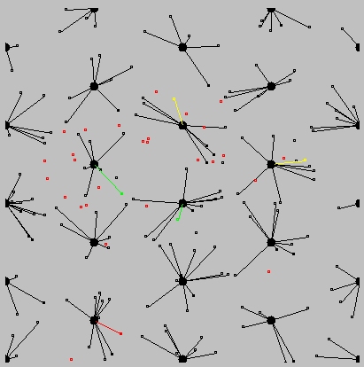
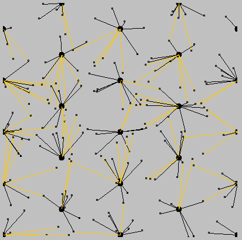
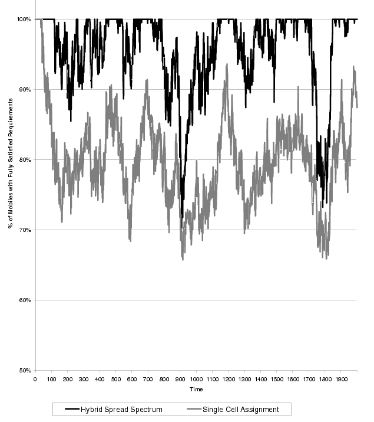

Philip N. Klein and Andrew Koyfman
Our approach, Hybrid Spread Spectrum, gives additional flexibility to assignment of bandwidth in a cellular system. It allows mobiles to split traffic between two or more base stations, and ameliorates the near-far problem using sectored antennas. The system solves the bandwidth allocation problem using linear programming techniques. Simulations of the Hybrid Spread Spectrum show that it is able to provide more bandwidth to mobiles than current single-cell assignment techniques, especially in the context of high bandwidth multimedia applications.
The screen shots from our simulation show a possible assignment of mobiles (small rectangles) to base stations (large circles). Black, Green, Yellow and Red mobiles are getting 100%, 75%, 25% and 0% of the requested bandwidth, respectively. An orange link in the picture on the right represents a cellular device communicating with a second or third closest base station.
| Single Cell Assignment | Hybrid Spread Spectrum Assignment |
|
 |
 |
